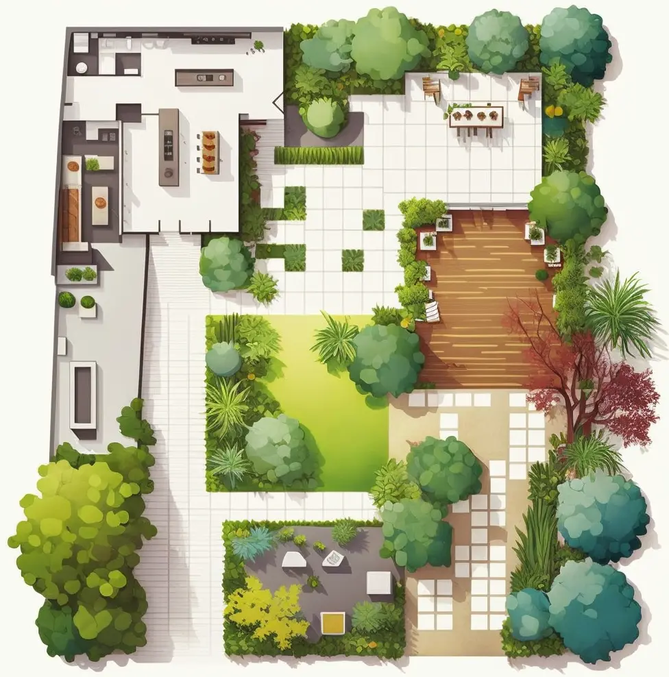

Sobre Nós
Paisagismo e Conservação
❝Somos a Lótus uma empresa de paisagismo e conservação com mais de 4 anos de experiência no mercado. Nos especializamos em criar e manter jardins e áreas verdes, utilizando técnicas de jardinagem modernas e sustentáveis. Trabalhamos com projetos personalizados para cada cliente, com o objetivo de criar espaços verdes que sejam bonitos, funcionais e ecologicamente corretos. Nossa equipe é altamente qualificada e dedicada a fornecer um serviço de qualidade excepcional.❞
❝Um jardim de paisagismo não só adiciona beleza estética à sua propriedade, mas também melhora a qualidade do ar e proporciona um ambiente saudável e relaxante para você e sua equipe.❞

Titulo
Transformando sonhos em verde. Cultive a natureza.

Titulo
Dedica a oferecer serviços 100% eco-friendly para manter a natureza em harmonia.

Titulo
ambiente sempre verde sem gastos com manutenção

Titulo
processo próprio de desidratação e preservação de plantas

Titulo
plantio em inovador sistema de manta hidropônica

Titulo
Transformando sonhos em verde. Cultive a natureza.

Titulo
processo próprio de desidratação e preservação de plantas

Titulo
ambiente sempre verde sem gastos com manutenção
Nossos Serviços
❝Você sabia que a jardinagem não é apenas um passatempo agradável, mas também pode ter efeitos positivos surpreendentes na sua saúde e bem-estar? Cultivar plantas e cuidar do seu jardim pode ajudar a reduzir o estresse, melhorar a concentração e aumentar a sensação de felicidade.❞
PROJETOS
Projetos Exclusivos.
Como podemos ajuda-lo ?
A empresa oferece soluções personalizadas de paisagismo residencial e empresarial. Com paixão pelo design e anos de experiência, eles criam jardins e áreas externas atraentes e funcionais, escolhendo as melhores plantas e elementos paisagísticos com base nas condições climáticas e do solo. Eles prestam atenção aos detalhes e acreditam que podem transformar o espaço externo em uma extensão confortável e agradável da casa ou empresa. Eles se orgulham de serem a escolha certa para projetos de paisagismo de alta qualidade e estão animados para trabalhar com o cliente.
Orçamento
Paisagismo e Conservação.
Após preencher este formulario sera enviado diretamente para o Whatsapp da empesa. Estamos aguardando seu orçamento para atender suas necessidades e ajudalo da melhor forma possivel. Preencha o formulario com nome, telefone, email e nos de uma breve explicação de sua necessidade.
Gabriel de Souza
Como especialistas apaixonados por paisagismo residencial e empresarial, nós oferecemos soluções únicas e completamente

Alfredo Mathos
Como especialistas apaixonados por paisagismo residencial e empresarial, nós oferecemos soluções únicas e completamente
Jessica Matos
Como especialistas apaixonados por paisagismo residencial e empresarial, nós oferecemos soluções únicas e completamente
Ana Carolina
Como especialistas apaixonados por paisagismo residencial e empresarial, nós oferecemos soluções únicas e completamente
Matheus Bernardo
Como especialistas apaixonados por paisagismo residencial e empresarial, nós oferecemos soluções únicas e completamente
Fernanda Dias
Como especialistas apaixonados por paisagismo residencial e empresarial, nós oferecemos soluções únicas e completamente
Maria Souza
Como especialistas apaixonados por paisagismo residencial e empresarial, nós oferecemos soluções únicas e completamente
Jose dos Santos
Como especialistas apaixonados por paisagismo residencial e empresarial, nós oferecemos soluções únicas e completamente
Gustavo Oliveira
Como especialistas apaixonados por paisagismo residencial e empresarial, nós oferecemos soluções únicas e completamente